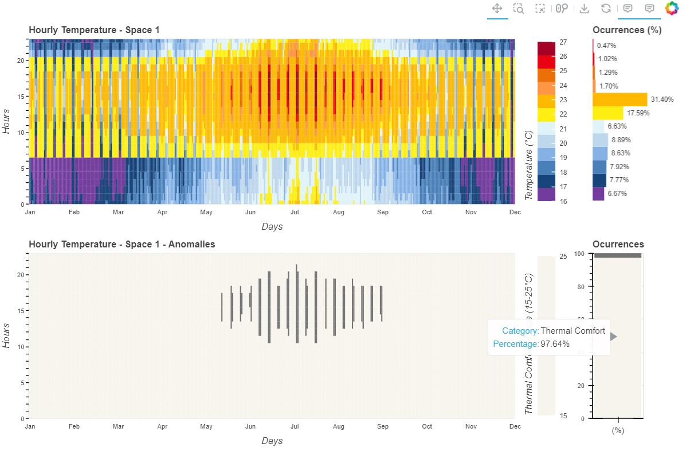
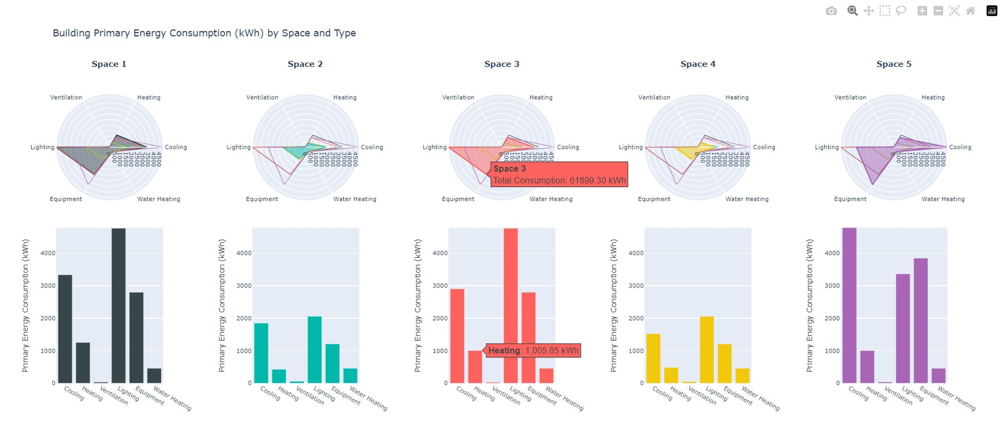

BEPVis data visualization tool
Presentation
The “BEPVis” data visualization tool streamlines the exploration and analysis of extensive datasets from building energy simulations, focusing on key objectives: crafting insightful visualizations tailored for expert users, presenting data clearly and intuitively through statistical outputs and graphical representations, and enhancing decision-making processes aimed at optimizing building energy performance, thereby contributing to sustainability goals and overall operational efficiency.
To evaluate the effectiveness of graphical representations of typical building performance indicators, we analyzed five types of visualizations: 1) stacked bar chart, 2) heatmap, 3) line chart, 4) radar chart, and 5) scatter plot. It’s important to recognize that due to the diverse design characteristics of these visualizations, the presentation of performance indicators and time scales may vary depending on the type of visualization used in this study. This variation arises from the unique features and functionalities of each visualization type, which are tailored to meet specific analytical needs and uncover particular insights [1][2].
The visualization tool was meticulously developed to ensure clarity, simplicity, and effectiveness. Guided by principles such as ease of comprehension, dimensional simplicity, and excellence in presentation, the goal was to seamlessly blend aesthetics with functionality [3][4]. With a strong focus on intuitive user interaction and web-based accessibility, special care was taken to ensure objective representation, promoting an unbiased interpretation of the criteria [5][6][7]. The aim was to deliver a visually compelling and intuitive tool that empowers users to explore and interpret data with confidence and ease. The visualizations were created using Python in Visual Studio Code, incorporating the Bokeh and Plotly libraries.
This work is part of a doctoral study conducted at Iuav University of Venice and is intended to serve as an initial visualization library, which will be further improved and expanded.
Developed Visualizations
Stacked Bar Chart

This visualization leverages the stacking of information to display the dynamics of the building’s energy balance (kWh), distinguishing between various energy types. The approach involves creating two charts side by side—one for annual data and another for monthly data—to facilitate the understanding of temporal variations. A single legend ensures consistency in the color scale for each type of consumption, simplifying the interpretation of results. The purpose of this chart is to present both the annual and monthly energy balance, highlighting energy gains and losses. The selected parameters include heating, solar radiation, lighting, electrical equipment, occupancy (people), window transmittance, air infiltration, opaque surface conduction, natural ventilation, mechanical ventilation, and cooling. For enhanced comparability and interpretation, all data were converted into kWh.
Line Chart
The straightforward design of the line chart facilitates data comparison and clearly emphasizes the desired values. This visualization shows daily average PMV (Predicted Mean Vote) values across four different spaces. PMV indices are color-coded, with dashed lines marking key thresholds based on EN 15251 standards for thermal comfort category III, providing clear reference points within the chart. Each space is represented by three lines: a main line for the average value, and two additional lines for maximum and minimum values. All details are easily accessible thanks to interactive hovering features and supplementary information. This chart represents the hourly internal temperature of each space, highlighting periods when temperatures fall within or outside the proposed thermal comfort range of 15-25 °C. The heat map component clearly visualizes temperature fluctuations and identifies periods when comfort is not maintained.
Heatmap
Based on Levitt’s proposal [8], this visualization uses color coding to represent temperatures (°C) across hourly intervals for each day and throughout the year. Beyond illustrating temperature variations, the legend also indicates the percentage occurrence over the year. A secondary chart shows whether these temperatures fall within the recommended thermal comfort range according to UNI 10829:1999. Interactive features enhance data exploration, allowing for deeper analysis. To showcase the versatility of this chart type, the interface was used to depict two key indicators of indoor environmental quality: PMV (Predicted Mean Vote) and PPD (Percentage of People Dissatisfied) for each of the building’s five spaces. The reference values used for the analysis adhere to ASHRAE and ISO 7730 standards, with a PPD below 15% and a PMV ranging from -0.7 to +0.7.
Radar Chart
This visualization depicts the building’s energy consumption (kWh) by type across four distinct spaces. To ensure clarity and avoid visual overlap, separate radar charts were created for each space, with grayscale data from other spaces included for easy comparison. To improve interpretation and accuracy in this type of chart, a corresponding bar chart was added to each radar chart, enabling users to quickly grasp the relative importance of each category. The radar chart is used to display overall annual energy consumption (in kWh), broken down into categories such as heating, cooling, water heating, electrical equipment, lighting, and ventilation. This chart type allows for quick comparison of different energy consumption categories in a single, comprehensive view.
Scatter Plot

This chart effectively illustrates the correlation between total heating power (W) and outdoor temperature (°C) within a specific environment. Through visual representation and statistical analysis, it assesses the strength of the relationship between these variables, revealing trends and patterns. Given the granularity of hourly data, the chart uses color coding for different time intervals, making the analysis more intuitive. Additionally, interactive features enhance user exploration, offering deeper insights into temporal patterns. This interface was employed to visualize two key correlations: the relationship between outdoor temperature (°C) and heating load during winter (W), and between outdoor temperature (°C) and cooling load during summer (W). This enables an assessment of the climate control system’s effectiveness in response to external climatic variations.